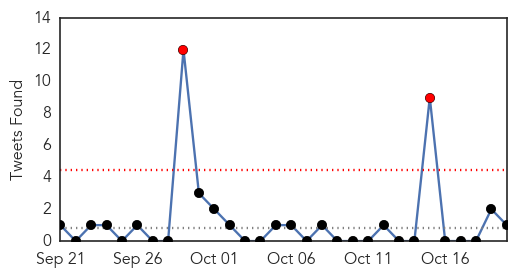
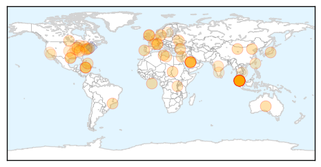

Influenza
30-Day Web Trend
8 alerts, 6 warnings

30-Day Twitter Trend
0 alerts, 0 warnings

Article Locations

Article Confidences

Top Articles:
- 0.999
- Protect yourself and your family from the flu
- 0.995
- Health, Wellness, and Fitness: 10/20
- 0.992
- Flu vaccines available in two provinces
- 0.991
- Get your flu shots as early as possible, despite some shipping delays
- 0.991
- Immunize El Paso to give flu shots countywide through November
- 0.990
- Fighting against the flu bug
- 0.984
- Flu shot still best weapon at hand
- 0.982
- Fewer than fifty percent in U.S. get flu shots, CDC says -
- 0.980
- Shortage of vaccination mist greets flu season
- 0.974
- Five and six-year-olds included in the NHS seasonal flu vaccination campaign for the first time
- 0.915
- Free flu shots for uninsured adults starts this week
- 0.863
- Future flu: ASU experts weigh in on where the annual shot is heading
- 0.839
- Flu shots won't be mandatory for health-care workers in Alberta
- 0.811
- Rota supporters gathering at North Bay's Davedi Club
- 0.806
- Today's stories from newspapers in Caledon
- 0.806
- Today's stories from newspapers in Caledon
- 0.806
- Today's stories from newspapers in Caledon
- 0.785
- Today's stories from newspapers in Ottawa Valley
- 0.785
- Today's stories from newspapers in Ottawa Valley
- 0.785
- Today's stories from newspapers in Ottawa Valley
- 0.779
- Health officials urge getting flu vaccine despite FluMist shortage
- 0.751
- October 20, 2015 Archives
- 0.751
- October 19, 2015 Archives
- 0.750
- Gov. Haslam gets flu shot, urges others to follow suit
- 0.723
- Saskatchewan flu vaccine clinics open, FluMist in limited supply
- 0.663
- Flu shot clinics open
- 0.554
- News in Brief 20 October 2015 (PM)
- 0.536
- Sask. 'immunize or mask' policy takes pause, but still encouraged
- 0.520
- Free flu vaccines available at Malibu Library on Oct. 24
Top Tweets:
- 0.971
- Health Care Professionals: This season’s Flu vaccine includes updated H3N2 & influenza B virus components. More: https://t.co/PoO4nhnzCr
- 0.539
- Human infection with avian influenza A(H7N9) virus – China https://t.co/ZjvxoZtfZ7
Unknown
30-Day Web Trend
0 alerts, 0 warnings
30-Day Twitter Trend
1 alerts, 0 warnings

Article Locations
Article Confidences

Top Articles:
- 0.990
- US, Saudi discussing Mers vaccine
- 0.990
- WHO chief says U.S., Saudi discussing MERS vaccine - World
- 0.983
- Tips To Help You Avoid Getting Infected
- 0.979
- Typhoid on the rise in KL - Nation
- 0.978
- What you need to know about this year’s flu vaccine
- 0.977
- World health chief says U.S., Saudi discussing MERS vaccine
- 0.952
- Typhoid fever cases on the rise in KL
- 0.952
- School district confirms case of Cryptosporidium
- 0.949
- Typhoid on the rise in Malaysian capital
- 0.933
- Typhoid fever cases on the rise in KL
- 0.930
- Kentucky health officials confirm first 2 cases of flu
- 0.925
- Typhoid Alert
- 0.923
- Dont Panic, Typhoid Fever Outbreak Under Control, Vaccine Sufficient
- 0.917
- Chicago Tribune
- 0.917
- Chicago Tribune
- 0.917
- Chicago Tribune
- 0.917
- Chicago Tribune
- 0.917
- Chicago Tribune
- 0.917
- Chicago Tribune
- 0.917
- Chicago Tribune
- 0.917
- Chicago Tribune
- 0.917
- Chicago Tribune
- 0.917
- Chicago Tribune
- 0.917
- Chicago Tribune
- 0.917
- Chicago Tribune
- 0.913
- Fred Co. Health Dept. To Hold Two Flu Clinics For Children
- 0.911
- Grundy County Health Department urges residents to get their flu shot
- 0.889
- Flu Mist Shortage Means More SPS Students Getting Flu Shots Instead
- 0.877
- Fife doctor urges parents to ensure kids are covered from flu
- 0.875
- Fife Parents Urged To Ensure Kids Are Vaccinated Against Flu
- 0.874
- Typhoid infected foreign workers likely to be illegals
- 0.874
- 42 infected babies at 2 hospitals; 18 dead
- 0.868
- Malaysia General Business Sports and Lifestyle News
- 0.822
- Lyme disease report issued by Dept of Health
- 0.821
- Outbreak At 2 Major Hospitals
- 0.815
- Ad Campaign Urges NYers to Get Their Flu Shot
- 0.811
- Clean drinking water a priority
- 0.811
- Flu Shot Clinics Opening on Wednesday
- 0.797
- World Health Organization may approve first malaria vaccine
- 0.789
- + Katholieke Actie Vlaanderen +: Danneels-Gate 29: "Kardinaal Danneels: Een wolf in schaapsvacht"
- 0.766
- Ministry suspects illegal migrants to be source of typhoid spread
- 0.764
- Health Ministry trying to localise source of typhoid outbreak
- 0.730
- Top Hamas leader arrested in West Bank by Israeli troops
- 0.730
- Slovenia says overwhelmed by migrant influx
- 0.730
- Moscow fury over Swiss jet’s close call with Russian plane
- 0.730
- Four years on, Gaddafi's legacy plagues chaotic Libya
- 0.730
- Trudeau heir fulfills great expectations as Liberals triumph in Canada
- 0.730
- French media file lawsuit after reporter assaulted in Burundi
- 0.726
- Public should not panic over typhoid outbreak: Subramaniam
- 0.712
- Ark., Md. Providers Notify Patients of Health Data Breaches
Showing top 50 articles...
Top Tweets:
- 0.808
- Alberta set up systems to detect MERS cases in returning Haj pilgrims, if any occurred. Detected some flu, no MERS. https://t.co/C8A4FkuYm7
- 0.517
- RT: FLU SCAN: Southern Hemisphere flu ebb; H5N1 on Nigerian farms https://t.co/B3IIzcb31H